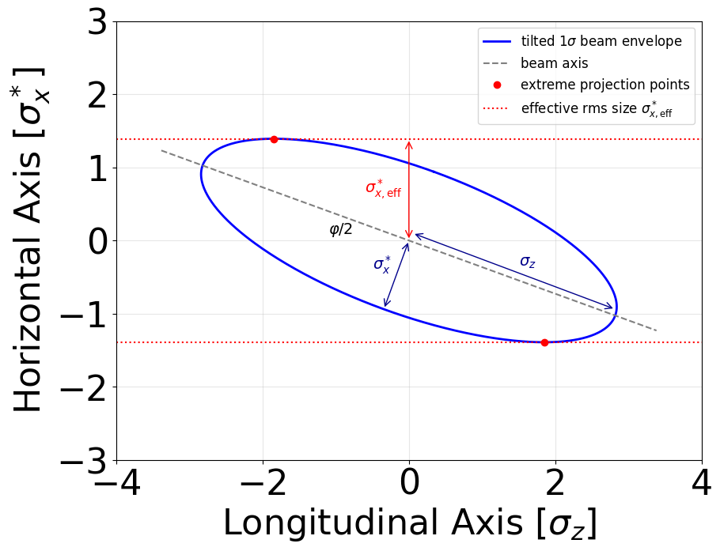
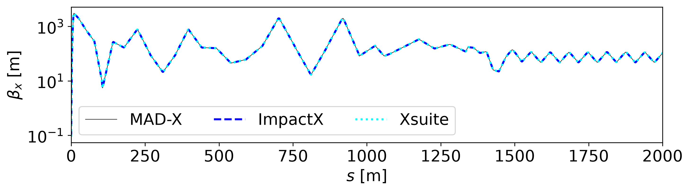
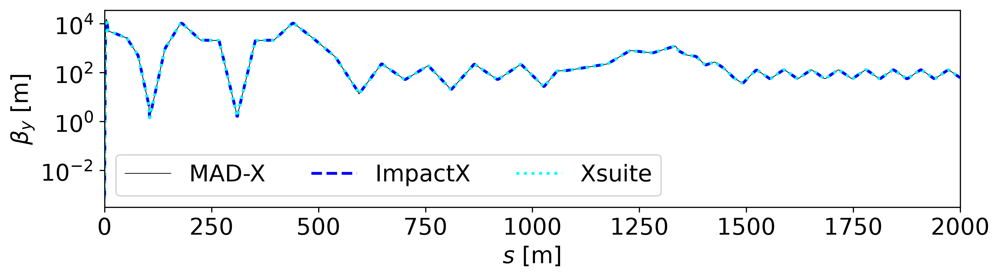
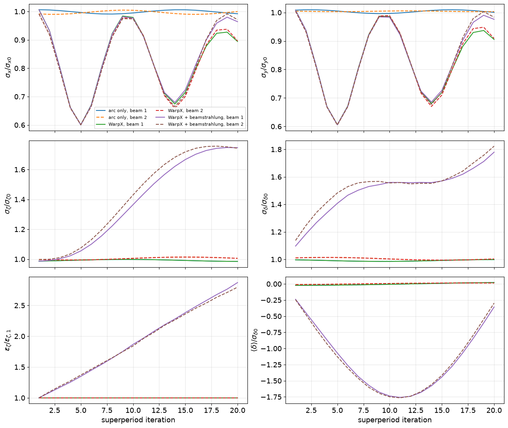
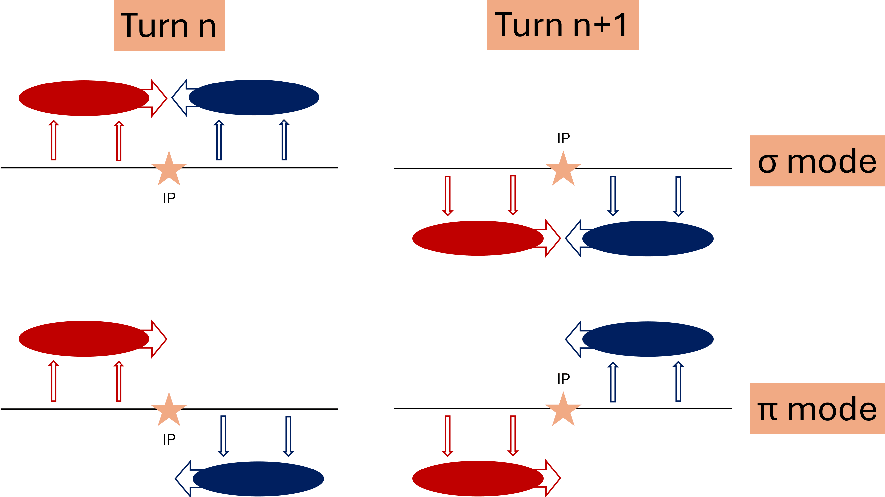

US-FCC 2026: Beam-Beam and Tracking Tutorial
Last updated on 2026-09-08 | Edit this page
Overview
Questions
- How can WarpX, ImpactX, Xsuite, and MAD-X be combined for FCC-ee studies?
- How closely do ImpactX, Xsuite, and MAD-X agree for linear optics?
- How can a WarpX beam-beam interaction be included in a multi-turn simulation with Xsuite?
Objectives
- Set up the software environment used by all three exercises.
- Simulate one FCC-ee bunch crossing with WarpX.
- Compare linear optics through an FCC-ee lattice with ImpactX, Xsuite, and MAD-X.
- Combine a WarpX beam-beam interaction with multi-turn Xsuite tracking.
Overview
Lesson authors: Arianna Formenti (LBNL) and Peter Kicsiny (SLAC).
The three exercises cover different scales of an FCC-ee simulation.
- A single bunch crossing. WarpX models the electromagnetic interaction between an electron bunch and a positron bunch, including several QED processes such as beamstrahlung, radiative Bhabha scattering, and incoherent pair generation.
- An optics comparison. ImpactX, Xsuite, and MAD-X evaluate the same linear FCC-ee lattice with a common reference particle; ImpactX transports a matched beam covariance through it.
- Many turns around the ring. Xsuite tracks the bunches around the FCC-ee lattice and WarpX supplies the beam-beam interaction at the collision point.
All three exercises use one Conda environment. Tutorial 1 is designed to run on a laptop in a few minutes. Its numerical resolution is deliberately modest and should not be used as a production setup.
Installation
We assume you have a Conda installation available in your machine. Download the Conda environment file, open a terminal in the directory containing it, and create the environment:
Activate it with:
The environment contains WarpX, ImpactX, Xsuite, MAD-X through CPyMAD, openPMD-viewer, Jupyter, and the Python packages used by the analysis notebooks.
OUTPUT
name: usfcc26-warpx-tutorial
channels:
- conda-forge
dependencies:
- python=3.14
- warpx=26.09
- impactx=26.09
- openmpi
- numpy
- pandas
- matplotlib
- jupyterlab
- openpmd-viewer
- pip
- pip:
- xsuite
- cpymad
- numbaYou can use any notebook interface. For example, start Jupyter Lab from the exercise directory with:
When you have finished working, deactivate the environment:
To remove it completely at a later date, run:
Tutorial 1: One FCC-ee bunch crossing with WarpX
What we will simulate
At the FCC-ee Z pole, a 45.6 GeV electron bunch collides with a 45.6 GeV positron bunch at a full crossing angle of 30 mrad. The bunches are flat, with an rms size of about 8 micrometers horizontally and 35 nanometers vertically at the interaction point. The bunches are 16 mm long.
WarpX computes the beam-beam fields and advances both bunches through the collision. The same simulation also generates beamstrahlung photons, radiative Bhabha photons, and incoherent electron-positron pairs.
Download the files
Create a directory for Tutorial 1 and place all of the following files in it:
The notebook and utility module must remain in the same directory as the input file.
Read the input file
The input
file is split into constants, numerical settings, particle species,
collision processes, and diagnostics. Values defined under
my_constants can be reused throughout the rest of the
file.
OUTPUT
####################
### MY CONSTANTS ###
####################
my_constants.mc2 = m_e*clight*clight
my_constants.GeV = q_e*1.e9
my_constants.pico = 1.e-12
my_constants.nano = 1.e-9
my_constants.micro = 1.e-6
my_constants.milli = 1.e-3
# BEAMS
my_constants.energy = 45.6*GeV
my_constants.energy_eV = energy / q_e
my_constants.gamma = energy / mc2
my_constants.npart = 20.20e10
my_constants.nmacropart = 1e5
my_constants.charge = q_e * npart
my_constants.betax = 90*milli
my_constants.betay = 0.7*milli
my_constants.sigmax = 7993.75*nano
my_constants.sigmay = 35.20*nano
my_constants.emitx = sigmax*sigmax / betax
my_constants.emity = sigmay*sigmay / betay
my_constants.emitx_n = emitx * gamma
my_constants.emity_n = emity * gamma
my_constants.sigmaz = 16.7*milli
my_constants.dux = emitx_n / sigmax
my_constants.duy = emity_n / sigmay
my_constants.espread = 1.34e-3 * gamma
my_constants.mux = 0.0*sigmax
my_constants.muy = 0.0*sigmay
my_constants.muz = 0.25*Lz
my_constants.focal_distance = muz
my_constants.crossing_angle = 30e-3
my_constants.rotation_angle = 0.5*crossing_angle
my_constants.sigmax_init = sigmax*sqrt(1 + (muz/betax)**2)
my_constants.sigmay_init = sigmay*sqrt(1 + (muz/betay)**2)
# BOX
my_constants.Lx = 8*( sigmax_init*cos(rotation_angle) + sigmaz*sin(rotation_angle) )
my_constants.Ly = 8*sigmay_init
my_constants.Lz = 16*sigmaz*cos(rotation_angle)
my_constants.nx = 64 # 512
my_constants.ny = 64 # 2048
my_constants.nz = 128 # 512
my_constants.dx = Lx/nx
my_constants.dy = Ly/ny
my_constants.dz = Lz/nz
# TIME
my_constants.T = 0.5*Lz/clight
my_constants.dt = T / nz
my_constants.nt = floor(T/dt)
# VIRTUAL PHOTONS
# minimum energy
my_constants.hwmin = 1e-4 * mc2 * mc2 / energy
# COLLISIONS
my_constants.sigma_kn_max = 6.65e-29 # m^2, maximum total Compton cross section (Klein-Nishina)
my_constants.sigma_bw_max = 1.7e-29 # m^2, maximum total Breit-Wheeler cross section
my_constants.probability_estimate = npart / nmacropart * sigma_bw_max * 2 * clight * dt / (dx * dy * dz)
my_constants.probability_target_value = 0.01 # we want the event to have this probability
my_constants.multiplier_bw = probability_target_value / probability_estimate
my_constants.probability_threshold = 0.1
# The sampling probability scales as cross section times event multiplier.
# Reduce the Klein-Nishina multiplier so its approximate maximum probability
# matches the Breit-Wheeler target used above.
my_constants.multiplier_kn = sigma_bw_max / sigma_kn_max * multiplier_bw
# DIAGNOSTICS
my_constants.bin_num_1d = 512
my_constants.bin_center_min_1d = 0.
my_constants.bin_center_max_1d = 2.1*energy_eV
my_constants.bin_size_1d = (bin_center_max_1d - bin_center_min_1d) / bin_num_1d
my_constants.bin_edge_min_1d = bin_center_min_1d - 0.5 * bin_size_1d
my_constants.bin_edge_max_1d = bin_center_max_1d + 0.5 * bin_size_1d
my_constants.bin_num_1d_eff = bin_num_1d + 1
warpx.used_inputs_file = warpx_used_inputs.txt
##########################
### GENERAL PARAMETERS ###
##########################
stop_time = T
amr.n_cell = nx ny nz
amr.max_level = 0
geometry.dims = 3
geometry.prob_lo = -0.5*Lx -0.5*Ly -0.5*Lz
geometry.prob_hi = 0.5*Lx 0.5*Ly 0.5*Lz
###########################
### BOUNDARY CONDITIONS ###
###########################
boundary.field_lo = open open open
boundary.field_hi = open open open
boundary.particle_lo = Absorbing Absorbing Absorbing
boundary.particle_hi = Absorbing Absorbing Absorbing
################
### NUMERICS ###
################
warpx.do_electrostatic = relativistic
warpx.const_dt = dt
warpx.grid_type = collocated
algo.particle_shape = 3
algo.particle_pusher = vay
warpx.poisson_solver = fft
warpx.use_2d_slices_fft_solver = 1
warpx.random_seed = 20260908
#################
### PARTICLES ###
#################
particles.species_names = beam1 beam2 pho1 pho2 ele_bh pos_bh ele_bw pos_bw ele_ll pos_ll vpho1 vpho2 pho1_bha pho2_bha beam1_bha beam2_bha test1 test2
# Beams
beam1.species_type = electron
beam1.injection_style = gaussian_beam
beam1.x_rms = sigmax
beam1.y_rms = sigmay
beam1.z_rms = sigmaz
beam1.x_m = - mux
beam1.y_m = - muy
beam1.z_m = - muz
beam1.npart = nmacropart
beam1.q_tot = -charge
beam1.focal_distance = focal_distance
beam1.do_gaussian_beam_rotation = 1
beam1.do_gaussian_beam_rotation_momenta = 0
beam1.gaussian_beam_rotation_angle = rotation_angle
beam1.gaussian_beam_rotation_axis = 0 1 0
beam1.momentum_distribution_type = gaussian
beam1.uz_m = gamma
beam1.uy_m = 0.0
beam1.ux_m = 0.0
beam1.ux_th = dux
beam1.uy_th = duy
beam1.uz_th = espread
beam1.initialize_self_fields = 1
beam1.do_qed_quantum_sync = 1 # BS
beam1.qed_quantum_sync_phot_product_species = pho1
beam1.do_classical_radiation_reaction = 0
beam1.do_qed_virtual_photons = 1
# Keep the baseline consistent with the analytical Bhabha comparison, which
# neglects the finite beam-size effect. Set this and the beam2 flag to 1 for a
# separate finite-beam-size study.
beam1.qed_virtual_photons_do_beam_size_effect = 0
beam1.qed_virtual_photon_species_name = vpho1
beam2.species_type = positron
beam2.injection_style = gaussian_beam
beam2.x_rms = sigmax
beam2.y_rms = sigmay
beam2.z_rms = sigmaz
beam2.x_m = mux
beam2.y_m = muy
beam2.z_m = muz
beam2.npart = nmacropart
beam2.q_tot = charge
beam2.focal_distance = focal_distance
beam2.do_gaussian_beam_rotation = 1
beam2.do_gaussian_beam_rotation_momenta = 0
beam2.gaussian_beam_rotation_angle = -rotation_angle
beam2.gaussian_beam_rotation_axis = 0 1 0
beam2.momentum_distribution_type = gaussian
beam2.uz_m = -gamma
beam2.uy_m = 0.0
beam2.ux_m = 0.0
beam2.ux_th = dux
beam2.uy_th = duy
beam2.uz_th = espread
beam2.initialize_self_fields = 1
beam2.do_qed_quantum_sync = 1
beam2.qed_quantum_sync_phot_product_species = pho2
beam2.do_classical_radiation_reaction = 0
beam2.do_qed_virtual_photons = 1
beam2.qed_virtual_photons_do_beam_size_effect = 0
beam2.qed_virtual_photon_species_name = vpho2
# Test particles
test1.species_type = electron
test1.injection_style = gaussian_beam
test1.x_rms = sigmax
test1.y_rms = sigmay
test1.z_rms = sigmaz
test1.x_m = - mux
test1.y_m = - muy
test1.z_m = - muz
test1.npart = 100
test1.q_tot = -charge
test1.focal_distance = focal_distance
test1.do_gaussian_beam_rotation = 1
test1.do_gaussian_beam_rotation_momenta = 0
test1.gaussian_beam_rotation_angle = rotation_angle
test1.gaussian_beam_rotation_axis = 0 1 0
test1.momentum_distribution_type = gaussian
test1.uz_m = gamma
test1.uy_m = 0.0
test1.ux_m = 0.0
test1.ux_th = dux
test1.uy_th = duy
test1.uz_th = espread
test1.do_not_deposit = 1
test2.species_type = positron
test2.injection_style = gaussian_beam
test2.x_rms = sigmax
test2.y_rms = sigmay
test2.z_rms = sigmaz
test2.x_m = mux
test2.y_m = muy
test2.z_m = muz
test2.npart = 100
test2.q_tot = charge
test2.focal_distance = focal_distance
test2.do_gaussian_beam_rotation = 1
test2.do_gaussian_beam_rotation_momenta = 0
test2.gaussian_beam_rotation_angle = -rotation_angle
test2.gaussian_beam_rotation_axis = 0 1 0
test2.momentum_distribution_type = gaussian
test2.uz_m = -gamma
test2.uy_m = 0.0
test2.ux_m = 0.0
test2.ux_th = dux
test2.uy_th = duy
test2.uz_th = espread
test2.do_not_deposit = 1
# Beamstrahlung photons
pho1.species_type = photon
pho1.injection_style = none
pho2.species_type = photon
pho2.injection_style = none
# Virtual photons
vpho1.qed_virtual_photons_min_energy = hwmin
vpho1.qed_virtual_photons_multiplier = 1
vpho1.species_type = photon
vpho1.injection_style = none
vpho1.do_not_push = 1
vpho2.qed_virtual_photons_min_energy = hwmin
vpho2.qed_virtual_photons_multiplier = 1
vpho2.species_type = photon
vpho2.injection_style = none
vpho2.do_not_push = 1
# Incoherent pairs
ele_bw.species_type = electron
ele_bw.injection_style = none
ele_bw.do_not_deposit = 1
pos_bw.species_type = positron
pos_bw.injection_style = none
pos_bw.do_not_deposit = 1
ele_ll.species_type = electron
ele_ll.injection_style = none
ele_ll.do_not_deposit = 1
pos_ll.species_type = positron
pos_ll.injection_style = none
pos_ll.do_not_deposit = 1
ele_bh.species_type = electron
ele_bh.injection_style = none
ele_bh.do_not_deposit = 1
pos_bh.species_type = positron
pos_bh.injection_style = none
pos_bh.do_not_deposit = 1
# Bhabha photons
pho1_bha.species_type = photon
pho1_bha.injection_style = none
pho1_bha.do_qed_breit_wheeler = 0
pho2_bha.species_type = photon
pho2_bha.injection_style = none
pho2_bha.do_qed_breit_wheeler = 0
# Backscattered beam particles
beam1_bha.species_type = electron
beam1_bha.injection_style = none
beam1_bha.do_not_deposit = 1
beam2_bha.species_type = positron
beam2_bha.injection_style = none
beam2_bha.do_not_deposit = 1
##############
### SF-QED ###
##############
qed_qs.photon_creation_energy_threshold = 0.
qed_qs.lookup_table_mode = builtin
qed_qs.chi_min = 1.e-8
warpx.do_qed_schwinger = 0.
##################
### COLLISIONS ###
##################
collisions.collision_names = ll bh1 bh2 lbw bhabha1 bhabha2
lbw.species = pho1 pho2
lbw.type = linear_breit_wheeler
lbw.product_species = ele_bw pos_bw
lbw.event_multiplier = multiplier_bw
lbw.probability_threshold = probability_threshold
lbw.probability_target_value = probability_target_value
ll.species = vpho1 vpho2
ll.type = linear_breit_wheeler
ll.product_species = ele_ll pos_ll
ll.event_multiplier = multiplier_bw
ll.probability_threshold = probability_threshold
ll.probability_target_value = probability_target_value
bh1.species = vpho1 pho2
bh1.type = linear_breit_wheeler
bh1.product_species = ele_bh pos_bh
bh1.event_multiplier = multiplier_bw
bh1.probability_threshold = probability_threshold
bh1.probability_target_value = probability_target_value
bh2.species = pho1 vpho2
bh2.type = linear_breit_wheeler
bh2.product_species = ele_bh pos_bh
bh2.event_multiplier = multiplier_bw
bh2.probability_threshold = probability_threshold
bh2.probability_target_value = probability_target_value
bhabha1.species = vpho2 beam1
bhabha1.type = linear_compton
bhabha1.product_species = pho1_bha beam1_bha
bhabha1.event_multiplier = multiplier_kn
bhabha1.probability_threshold = probability_threshold
bhabha1.probability_target_value = probability_target_value
bhabha2.species = vpho1 beam2
bhabha2.type = linear_compton
bhabha2.product_species = pho2_bha beam2_bha
bhabha2.event_multiplier = multiplier_kn
bhabha2.probability_threshold = probability_threshold
bhabha2.probability_target_value = probability_target_value
###################
### DIAGNOSTICS ###
###################
# These will contain per particle coordinates, momenta and weights
diagnostics.diags_names = particles_in particles_out trajectories
trajectories.intervals = 1
trajectories.write_species = 1
trajectories.diag_type = Full
trajectories.species = test1 test2
trajectories.fields_to_plot = none
trajectories.format = openpmd
trajectories.openpmd_backend = bp
trajectories.dump_last_timestep = 1
trajectories.test1.additional_variables = Ex Ey Ez Bx By Bz
trajectories.test2.additional_variables = Ex Ey Ez Bx By Bz
particles_in.intervals = floor(nz/4)
particles_in.write_species = 1
particles_in.diag_type = Full
particles_in.species = beam1 beam2 pho1 pho2 ele_bh pos_bh ele_bw pos_bw ele_ll pos_ll pho1_bha pho2_bha beam1_bha beam2_bha
particles_in.fields_to_plot = none
particles_in.format = openpmd
particles_in.openpmd_backend = bp
particles_in.dump_last_timestep = 1
particles_out.intervals = -1
particles_out.diag_type = BoundaryScraping
particles_out.format = openpmd
particles_out.openpmd_backend = bp
particles_out.dump_last_timestep = 1
beam1.save_particles_at_xlo = 1
beam1.save_particles_at_ylo = 1
beam1.save_particles_at_zlo = 1
beam1.save_particles_at_xhi = 1
beam1.save_particles_at_yhi = 1
beam1.save_particles_at_zhi = 1
beam2.save_particles_at_xlo = 1
beam2.save_particles_at_ylo = 1
beam2.save_particles_at_zlo = 1
beam2.save_particles_at_xhi = 1
beam2.save_particles_at_yhi = 1
beam2.save_particles_at_zhi = 1
pho1.save_particles_at_xlo = 1
pho1.save_particles_at_ylo = 1
pho1.save_particles_at_zlo = 1
pho1.save_particles_at_xhi = 1
pho1.save_particles_at_yhi = 1
pho1.save_particles_at_zhi = 1
pho2.save_particles_at_xlo = 1
pho2.save_particles_at_ylo = 1
pho2.save_particles_at_zlo = 1
pho2.save_particles_at_xhi = 1
pho2.save_particles_at_yhi = 1
pho2.save_particles_at_zhi = 1
ele_ll.save_particles_at_xlo = 1
ele_ll.save_particles_at_ylo = 1
ele_ll.save_particles_at_zlo = 1
ele_ll.save_particles_at_xhi = 1
ele_ll.save_particles_at_yhi = 1
ele_ll.save_particles_at_zhi = 1
pos_ll.save_particles_at_xlo = 1
pos_ll.save_particles_at_ylo = 1
pos_ll.save_particles_at_zlo = 1
pos_ll.save_particles_at_xhi = 1
pos_ll.save_particles_at_yhi = 1
pos_ll.save_particles_at_zhi = 1
ele_bh.save_particles_at_xlo = 1
ele_bh.save_particles_at_ylo = 1
ele_bh.save_particles_at_zlo = 1
ele_bh.save_particles_at_xhi = 1
ele_bh.save_particles_at_yhi = 1
ele_bh.save_particles_at_zhi = 1
pos_bh.save_particles_at_xlo = 1
pos_bh.save_particles_at_ylo = 1
pos_bh.save_particles_at_zlo = 1
pos_bh.save_particles_at_xhi = 1
pos_bh.save_particles_at_yhi = 1
pos_bh.save_particles_at_zhi = 1
ele_bw.save_particles_at_xlo = 1
ele_bw.save_particles_at_ylo = 1
ele_bw.save_particles_at_zlo = 1
ele_bw.save_particles_at_xhi = 1
ele_bw.save_particles_at_yhi = 1
ele_bw.save_particles_at_zhi = 1
pos_bw.save_particles_at_xlo = 1
pos_bw.save_particles_at_ylo = 1
pos_bw.save_particles_at_zlo = 1
pos_bw.save_particles_at_xhi = 1
pos_bw.save_particles_at_yhi = 1
pos_bw.save_particles_at_zhi = 1
pho1_bha.save_particles_at_xlo = 1
pho1_bha.save_particles_at_ylo = 1
pho1_bha.save_particles_at_zlo = 1
pho1_bha.save_particles_at_xhi = 1
pho1_bha.save_particles_at_yhi = 1
pho1_bha.save_particles_at_zhi = 1
pho2_bha.save_particles_at_xlo = 1
pho2_bha.save_particles_at_ylo = 1
pho2_bha.save_particles_at_zlo = 1
pho2_bha.save_particles_at_xhi = 1
pho2_bha.save_particles_at_yhi = 1
pho2_bha.save_particles_at_zhi = 1
beam1_bha.save_particles_at_xlo = 1
beam1_bha.save_particles_at_ylo = 1
beam1_bha.save_particles_at_zlo = 1
beam1_bha.save_particles_at_xhi = 1
beam1_bha.save_particles_at_yhi = 1
beam1_bha.save_particles_at_zhi = 1
beam2_bha.save_particles_at_xlo = 1
beam2_bha.save_particles_at_ylo = 1
beam2_bha.save_particles_at_zlo = 1
beam2_bha.save_particles_at_xhi = 1
beam2_bha.save_particles_at_yhi = 1
beam2_bha.save_particles_at_zhi = 1
# REDUCED
warpx.reduced_diags_names = DiffLumi_beam1_beam2 ColliderRelevant
DiffLumi_beam1_beam2.type = DifferentialLuminosity
DiffLumi_beam1_beam2.intervals = nt
DiffLumi_beam1_beam2.species = beam1 beam2
DiffLumi_beam1_beam2.bin_number = bin_num_1d_eff
DiffLumi_beam1_beam2.bin_max = bin_edge_max_1d
DiffLumi_beam1_beam2.bin_min = bin_edge_min_1d
ColliderRelevant.species = beam1 beam2
ColliderRelevant.type = ColliderRelevantThe laptop setup uses:
-
100000macroparticles in each primary bunch -
100passive test particles for each beam - a
64 x 64 x 128mesh -
128time steps - a two-dimensional-slices FFT Poisson solver
- the built-in quantum-synchrotron lookup table
- a fixed random seed for reproducibility
The mesh is much coarser than a production FCC-ee simulation. It is sufficient for learning the workflow and recovering the main features of the collision. The built-in QED table also keeps the download small but has low resolution. A quantitative physics study would require a higher-resolution QED table, together with mesh and macroparticle convergence scans.
The Conda Forge WarpX package used by this lesson includes QED
support and the built-in tables, but it does not currently install the
standalone qed_table_generator executable. To generate a
higher-resolution table, build WarpX from source with
WarpX_QED_TOOLS=ON, following the WarpX
QED table-tool instructions. The resulting
qed_table_generator can create a quantum-synchrotron table
that WarpX reads with qed_qs.lookup_table_mode = load and
qed_qs.load_table_from = /path/to/table.
The primary species and their main products are:
| Species | Role |
|---|---|
beam1, beam2
|
Initial electron and positron bunches |
test1, test2
|
Passive electron and positron probes used for trajectories |
pho1, pho2
|
Beamstrahlung photons emitted by the two bunches |
vpho1, vpho2
|
Virtual photons used by the equivalent-photon model |
ele_ll, pos_ll
|
Landau-Lifshitz pair products |
ele_bh, pos_bh
|
Breit-Heitler pair products |
ele_bw, pos_bw
|
Breit-Wheeler pair products |
pho1_bha, pho2_bha
|
Photons from radiative Bhabha scattering |
beam1_bha, beam2_bha
|
Scattered primary particles from Bhabha events |
Beamstrahlung is enabled directly on each primary beam through the
strong-field QED modules. The finite beam-size correction in the
equivalent-photon model is disabled in the baseline input. This makes
the radiative Bhabha result consistent with the analytical comparison
below, which also neglects that correction; it does not disable
beamstrahlung. To study finite-beam-size suppression, set
qed_virtual_photons_do_beam_size_effect = 1 for both
primary beams and run the modified input in a separate directory so that
the baseline diagnostics are retained. The incoherent-pair and radiative
Bhabha channels are listed in collisions.collision_names.
Event multipliers increase the number of sampled rare events, while
particle weights preserve the physical yield. Because the sampling
probability scales with cross section times event multiplier, the
Klein–Nishina multiplier is reduced by
sigma_bw_max / sigma_kn_max relative to the Breit–Wheeler
multiplier. This keeps their approximate maximum sampling probabilities
near the same target.
Notice that the radiative Bhabha products are stored in new species. This makes the emitted photons and scattered primary particles easy to analyze without mixing them into the original bunch species.
Diagnostics
The simulation writes three openPMD particle diagnostics:
-
diags/particles_incontains snapshots of particles that are still inside the simulation domain -
diags/particles_outrecords particles when they cross a domain boundary -
diags/trajectoriesrecords the two test-particle species at every time step
The test species start with the same distributions as the primary
beams, but do_not_deposit = 1 prevents their charge and
current from contributing to the field solve. They respond to the
self-consistent beam-beam fields without changing those fields, making
them useful single-particle probes.
The ColliderRelevant and
DifferentialLuminosity reduced diagnostics are written to
diags/reducedfiles.
The analysis utility module combines the particles that remain in the box with the boundary records. For escaped particles, it reconstructs their positions at the final simulation time from their scrape time and momentum:
\[ \boldsymbol{x}(t_{\mathrm{final}}) =\boldsymbol{x}(t_{\mathrm{scrape}}) +\boldsymbol{v}\left(t_{\mathrm{final}}-t_{\mathrm{scrape}}\right). \]
For photons, \(\boldsymbol{v}=c\boldsymbol{p}/|\boldsymbol{p}|\). For massive particles, the utility obtains the velocity from \(\boldsymbol{v}=\boldsymbol{p}/(\gamma m_e)\). This reconstruction lets the later spectrum and pair plots include products that have already left the mesh instead of silently discarding them.
Run WarpX
Activate the tutorial environment, change to the directory containing the three downloaded files, and run:
On the laptop used to prepare this tutorial, the run takes about three to four minutes and produces roughly 80 MB of diagnostics. Runtime will vary with the processor and storage system.
When the run finishes, your directory should contain:
tutorial_1_input.txt
tutorial_1_plots.ipynb
tutorial_1_utils.py
diags/
warpx_used_inputs.txtwarpx_used_inputs.txt is generated by WarpX. It records
the fully evaluated input and is useful when an input value is defined
through an expression.
Analyze the collision
Open the
analysis notebook with your preferred Jupyter interface and run the
cells in order. The notebook expects the diags directory in
the current Tutorial 1 directory.
The utility module contains the routines used to read particle data, reconstruct boundary particles, integrate the hourglass luminosity, and calculate the radiative Bhabha cross section and lifetime.
OUTPUT
import os
import re
import warnings
import numpy as np
from openpmd_viewer import OpenPMDTimeSeries
from scipy.constants import c, e, m_e
from scipy.integrate import quad, trapezoid
def extract_macroparticles(species_list, sim_folder=".", diags_name="diags", step=-1):
"""
Read WarpX coordinates located at 'sim_folder' in 'diags_name'
corresponding to simulation timestep 'step'.
"""
x_list = []
y_list = []
z_list = []
w_list = []
ux_list = []
uy_list = []
uz_list = []
if step==-1:
folder_list = [
diags_name+'/particles_in',
diags_name+'/particles_out/particles_at_xlo',
diags_name+'/particles_out/particles_at_xhi',
diags_name+'/particles_out/particles_at_ylo',
diags_name+'/particles_out/particles_at_yhi',
diags_name+'/particles_out/particles_at_zlo',
diags_name+'/particles_out/particles_at_zhi',
]
else:
folder_list = [ diags_name+'/particles_in', ]
# Loop through the files that contain particles collected at the edges and in the box
for folder_name in folder_list:
read_dir = os.path.join(sim_folder, folder_name)
if os.path.isdir(read_dir):
series = OpenPMDTimeSeries(read_dir)
time = series.t[step]
iteration = series.iterations[step]
dt = series.t[-1] / series.iterations[-1]
for species in species_list:
x, y, z, ux, uy, uz, w = series.get_particle( ['x', 'y', 'z', 'ux', 'uy', 'uz', 'w'], iteration=iteration, species=species )
if ("particles_at" in folder_name):
it_scrape, = series.get_particle( ['stepScraped', ], iteration=iteration, species=species )
t_scrape = it_scrape * dt
momentum_squared = ux**2 + uy**2 + uz**2
if "pho" in species:
momentum_magnitude = np.sqrt(momentum_squared)
vx = c * ux / momentum_magnitude
vy = c * uy / momentum_magnitude
vz = c * uz / momentum_magnitude
else:
gamma = np.sqrt(1.0 + momentum_squared / (m_e * c) ** 2)
vx = ux / (gamma * m_e)
vy = uy / (gamma * m_e)
vz = uz / (gamma * m_e)
time_since_scrape = time - t_scrape
x = x + vx * time_since_scrape
y = y + vy * time_since_scrape
z = z + vz * time_since_scrape
# convert from SI [kg m s-1] to [eV/c]
conversion_factor = c/e
x_list=np.append(x_list, x)
y_list=np.append(y_list, y)
z_list=np.append(z_list, z)
w_list=np.append(w_list, w)
ux_list=np.append(ux_list, ux * conversion_factor)
uy_list=np.append(uy_list, uy * conversion_factor)
uz_list=np.append(uz_list, uz * conversion_factor)
# x y z [m], ux, uy, uz [eV/c], w=weight (no dimension)
return np.asarray(x_list), np.asarray(y_list), np.asarray(z_list), np.asarray(ux_list), np.asarray(uy_list), np.asarray(uz_list), np.asarray(w_list)
def get_Ecom(filename):
"""
Return 1 numpy array:
- the center-of-mass energy (in eV)
"""
with open(filename) as f:
# First line: header, contains the energies
line = f.readline()
Ecom = np.array( list(map( float, re.findall('=(.*?)\\(', line) )) )
return Ecom
def get_dL_dEcom(filename):
"""
Return the cumulative differential luminosity and its energy integral.
Returns:
- the center-of-mass energy [eV]
- differential luminosity [m^-2 eV^-1]
- luminosity integrated over center-of-mass energy [m^-2]
"""
Ecom = get_Ecom(filename) # eV
# ``ndmin=2`` also handles a diagnostic containing only its final row.
values = np.loadtxt(filename, ndmin=2)[-1, 2:]
if values.size == Ecom.size + 1:
# Current WarpX appends the total luminosity after the differential
# energy bins. Keep it out of the plotted spectrum.
dL_dEcom = values[:-1] # m^-2 eV^-1
Ltot = values[-1] # m^-2
elif values.size == Ecom.size:
# Compatibility with older output that omitted the total column.
warnings.warn(
"DifferentialLuminosity has no final total-luminosity column; "
"integrating the energy bins. Check the WarpX version.",
RuntimeWarning,
stacklevel=2,
)
dL_dEcom = values
Ltot = trapezoid(dL_dEcom, Ecom)
else:
raise ValueError(
"Unexpected DifferentialLuminosity layout: "
f"found {values.size} values for {Ecom.size} energy bins"
)
return Ecom, dL_dEcom, Ltot
def luminosity_per_bx_hourglass(
bunch_intensity,
sigma_x,
sigma_y,
sigma_z,
phi,
beta_x_star,
beta_y_star,
epsabs=0.0,
epsrel=1.0e-10,
):
"""Return luminosity per bunch crossing, including the hourglass effect.
This evaluates the longitudinal overlap of two identical Gaussian bunches.
The transverse beam sizes evolve around the interaction-point waist as
``sigma(s) = sigma_star * sqrt(1 + (s / beta_star)**2)``. The crossing
angle ``phi`` is the half crossing angle.
Parameters are in SI units (meters and radians); the returned luminosity
per bunch crossing is in ``m^-2``.
"""
positive_parameters = {
"bunch_intensity": bunch_intensity,
"sigma_x": sigma_x,
"sigma_y": sigma_y,
"sigma_z": sigma_z,
"beta_x_star": beta_x_star,
"beta_y_star": beta_y_star,
}
for name, value in positive_parameters.items():
if value <= 0.0:
raise ValueError(f"{name} must be positive, got {value!r}")
def integrand(s):
sigma_x_s = sigma_x * np.sqrt(1.0 + (s / beta_x_star) ** 2)
sigma_y_s = sigma_y * np.sqrt(1.0 + (s / beta_y_star) ** 2)
longitudinal_overlap = np.exp(-(s / sigma_z) ** 2)
crossing_angle_reduction = np.exp(-((phi * s) / sigma_x_s) ** 2)
return longitudinal_overlap * crossing_angle_reduction / (
sigma_x_s * sigma_y_s
)
overlap_integral, _ = quad(
integrand,
-np.inf,
np.inf,
epsabs=epsabs,
epsrel=epsrel,
limit=200,
)
normalization = 4.0 * np.pi * np.sqrt(np.pi) * sigma_z
return bunch_intensity**2 * overlap_integral / normalization
def integrand_qed(y, beam_energy, electron_mass):
"""Return the radiative-Bhabha cross-section integrand.
``y`` is the emitted photon's fractional beam energy. ``beam_energy`` and
``electron_mass`` must use the same energy unit; the tutorial uses GeV.
This expression neglects the beam-size effect.
"""
if not 0.0 < y < 1.0:
raise ValueError(f"y must lie strictly between 0 and 1, got {y!r}")
if beam_energy <= 0.0 or electron_mass <= 0.0:
raise ValueError("beam_energy and electron_mass must be positive")
photon_spectrum = (4.0 / 3.0 + y**2 - 4.0 * y / 3.0) / y
logarithmic_factor = (
2.0 * np.log(4.0 * beam_energy**2 / electron_mass**2)
+ 2.0 * np.log((1.0 - y) / y)
- 1.0
)
return photon_spectrum * logarithmic_factor
def beam_lifetime(
cross_section,
luminosity_per_bx,
bunch_population,
n_interaction_points,
revolution_frequency,
n_bunches=1,
):
"""Return the beam lifetime in hours.
``cross_section * luminosity_per_bx`` must be dimensionless. For example,
use a cross section in mbarn with luminosity converted to mbarn^-1 per
bunch crossing, as done in the tutorial notebook.
"""
positive_parameters = {
"cross_section": cross_section,
"luminosity_per_bx": luminosity_per_bx,
"bunch_population": bunch_population,
"n_interaction_points": n_interaction_points,
"revolution_frequency": revolution_frequency,
"n_bunches": n_bunches,
}
for name, value in positive_parameters.items():
if value <= 0.0:
raise ValueError(f"{name} must be positive, got {value!r}")
loss_rate = (
cross_section
* luminosity_per_bx
* n_interaction_points
* revolution_frequency
* n_bunches
)
return bunch_population / loss_rate / 3600.0What the notebook checks
The notebook does more than plot the output. It turns the particle and reduced diagnostics into beam-physics quantities and, where a compact analytical model is available, compares the simulation with that model. The seven stages below explain what is calculated and what each comparison can tell us.
1. Derived beam parameters
The notebook first reproduces the quantities needed by the later estimates. The relativistic factor and the rms angular divergences at the interaction point are
\[ \gamma=\frac{E_{\mathrm{beam}}}{m_ec^2}, \qquad \sigma_{x'}^*=\frac{\sigma_x^*}{\beta_x^*}, \qquad \sigma_{y'}^*=\frac{\sigma_y^*}{\beta_y^*}. \]
The 30 mrad value in the input is the full crossing angle, so the formulae use the half angle \(\phi=15\) mrad. The Piwinski angle and the corresponding effective horizontal overlap size are
\[ \Phi=\frac{\sigma_z}{\sigma_x^*}\tan\phi, \qquad \sigma_{x,\mathrm{eff}}^*=\sigma_x^*\sqrt{1+\Phi^2}. \]
For the supplied parameters, \(\Phi\simeq31.34\): the crossing angle therefore dominates the effective horizontal overlap.

The notebook evaluates the linearized beam-beam parameters
\[ \xi_x=\frac{N_b r_e\beta_x^*} {2\pi\gamma\sigma_{x,\mathrm{eff}}^* \left(\sigma_{x,\mathrm{eff}}^*+\sigma_y^*\right)}, \]
\[ \xi_y=\frac{N_b r_e\beta_y^*} {2\pi\gamma\sigma_y^* \left(\sigma_{x,\mathrm{eff}}^*+\sigma_y^*\right)}, \]
where \(N_b\) is the bunch population and \(r_e\) is the classical electron radius. The resulting values are approximately \(\xi_x=0.0015\) and \(\xi_y=0.0805\).
2. Collision snapshots
At each stored iteration, the notebook plots both primary beams and their beamstrahlung photons in the \((z,x)\) and \((z,y)\) planes. Coordinates are normalized as \(z/\sigma_z\), \(x/\sigma_x^*\), and \(y/\sigma_y^*\) so that the very different horizontal, vertical, and longitudinal scales can be compared in the same figure. These views check the crossing geometry and direction of motion: beam 1 travels toward positive \(z\), beam 2 toward negative \(z\), and the photon products follow the parent beams. Plotting uses a stride for speed; the underlying diagnostic data are not down-sampled.
The notebook next creates one ParticleTracker for
test1 and another for test2. Both trackers
select their particles at the first trajectory output. With
preserve_particle_index=True, a given particle ID retains
the same array index at every later iteration; if a particle is absent,
its entry is filled with NaN instead of shifting all
subsequent trajectories. Plotting each column of the coordinate arrays
therefore traces one physical particle through the collision. The 3D
view shows the full \((z,x,y)\) paths,
while the \((z,x)\) and \((z,y)\) projections make the small
transverse motion easier to read. These passive trajectories reveal the
crossing geometry and accumulated beam-beam deflection without the
sampling noise of the full bunches.
3. Horizontal beam-beam kick
To measure the kick, the notebook selects the beam-1 macroparticles present in the final diagnostic and uses their unique particle IDs to retrieve those same particles from the initial diagnostic. This avoids pairing unrelated rows if the openPMD particle order changes. It then converts momenta into ultrarelativistic trajectory angles,
\[ x'=\frac{p_x}{p_z}, \qquad \Delta x'=x'_{\mathrm{end}}-x'_{\mathrm{start}}. \]
Close to the opposing bunch axis, a Gaussian beam acts like a linear focusing lens:
\[ \Delta x'(x)\simeq-\frac{4\pi\xi_x}{\beta_x^*}x. \]
Because \(\sigma_{x'}^*=\sigma_x^*/\beta_x^*\), normalizing both axes gives a particularly direct test,
\[ \frac{\Delta x'}{\sigma_{x'}^*} \simeq -4\pi\xi_x\frac{x}{\sigma_x^*}. \]
The notebook fits a straight line over \(|x|<10\sigma_x^*\). This wide-looking
interval still samples the central part of the force because \(\sigma_{x,\mathrm{eff}}^*\gg\sigma_x^*\)
for this crossing angle. With the supplied laptop input, the fitted
normalized slope is about -0.0171, while the analytical
slope \(-4\pi\xi_x\) is about
-0.0183, a difference of roughly 7 percent. This tests the
combined field solve and particle push at the chosen resolution. It is
not a convergence test, and it considers only particles that remain in
the domain through the final recorded iteration.
4. Photon spectra and the loss threshold
The helper combines photons still inside the domain with photons found in the boundary-scraping diagnostics. Since openPMD returns momentum in this analysis as eV/\(c\), the photon energy in GeV is calculated from
\[ E_\gamma[\mathrm{GeV}] =10^{-9}\sqrt{p_x^2+p_y^2+p_z^2}. \]
The beamstrahlung and radiative Bhabha histograms are weighted histograms. In an energy bin \(j\), the physical photon yield is
\[ N_{\gamma,j}=\sum_{i\in j}w_i, \]
not the number of macroparticle records. This distinction matters because the rare-event multipliers deliberately create extra sampled events and compensate through the macroparticle weights \(w_i\).
For the Bhabha spectrum, the notebook also marks the energy associated with a 1 percent ring momentum acceptance. If \(\delta_{\mathrm{acc}}=0.01\), a photon is counted as causing the loss of its emitting primary when
\[ E_\gamma>\delta_{\mathrm{acc}}E_{\mathrm{beam}}. \]
This is an approximate loss model: the actual ring acceptance depends on the lattice and on where the off-momentum particle travels.
5. Luminosity and the hourglass effect
The DifferentialLuminosity diagnostic supplies the
cumulative center-of-mass-energy spectrum \(d\mathcal{L}/dE_{\mathrm{com}}\), in m\(^{-2}\) eV\(^{-1}\). In current WarpX output, the last
value on each data row is the total luminosity per bunch crossing,
\[ \mathcal{L}_{E}=\mathcal{L}_{\mathrm{total}}. \]
The utility separates that last value from the preceding energy bins before plotting. For compatibility with an older output layout that omitted the total, it emits a warning and evaluates the numerical energy integral
\[ \mathcal{L}_{E} \simeq\sum_j \left.\frac{d\mathcal{L}}{dE_{\mathrm{com}}}\right|_j\Delta E_j. \]
The ColliderRelevant diagnostic supplies \(d\mathcal{L}/dt\), which gives an
independent estimate through a trapezoidal time integral,
\[ \mathcal{L}_{\mathrm{WarpX}} \simeq\sum_k\frac{1}{2} \left[ \left.\frac{d\mathcal{L}}{dt}\right|_k+ \left.\frac{d\mathcal{L}}{dt}\right|_{k+1} \right](t_{k+1}-t_k). \]
Comparing \(\mathcal{L}_{E}\) with \(\mathcal{L}_{\mathrm{WarpX}}\) first checks the consistency of the two WarpX diagnostics. Their energy and time binning are different, so they are not expected to be bitwise identical; a material difference should prompt checks of the diagnostic binning and numerical resolution.
The first analytical estimate treats the transverse sizes as constant and accounts for the crossing angle only through the effective horizontal size:
\[ \mathcal{L}_0 =\frac{N_b^2}{4\pi\sigma_{x,\mathrm{eff}}^*\sigma_y^*}. \]
FCC-ee has a strong hourglass effect because the beta functions, especially \(\beta_y^*\), are short compared with the bunch length. The utility module therefore also evaluates the longitudinal overlap numerically. At a distance \(s\) from the interaction-point waist,
\[ \sigma_u(s)=\sigma_u^* \sqrt{1+\left(\frac{s}{\beta_u^*}\right)^2}, \qquad u\in\{x,y\}, \]
and the luminosity model used by the notebook is
\[ \mathcal{L}_{\mathrm{HG}} =\frac{N_b^2}{4\pi\sqrt{\pi}\sigma_z} \int_{-\infty}^{\infty} \frac{ \exp\!\left[-(s/\sigma_z)^2\right] \exp\!\left[-(\phi s/\sigma_x(s))^2\right] }{\sigma_x(s)\sigma_y(s)}\,ds. \]
The two exponential factors describe longitudinal bunch overlap and the crossing-angle reduction, respectively. The notebook reports \(\mathcal{L}_{\mathrm{WarpX}}\), \(\mathcal{L}_0\), \(\mathcal{L}_{\mathrm{HG}}\), and the ratio \(\mathcal{L}_{\mathrm{WarpX}}/\mathcal{L}_{\mathrm{HG}}\). At the deliberately coarse laptop resolution, a discrepancy should be interpreted as motivation for mesh, time-step, and macroparticle convergence studies rather than as a precision prediction.
6. Radiative Bhabha cross section and beam lifetime
For each beam, the weighted number of photons above the momentum-acceptance threshold is
\[ N_{\mathrm{loss}}= \sum_{E_{\gamma,i}>\delta_{\mathrm{acc}}E_{\mathrm{beam}}}w_i. \]
Dividing this yield by the simulated luminosity per crossing gives the WarpX cross-section estimate,
\[ \sigma_{\mathrm{Bhabha}}^{\mathrm{WarpX}} =\frac{N_{\mathrm{loss}}}{\mathcal{L}_{\mathrm{WarpX}}}. \]
The notebook compares it with the following QED estimate without the beam-size effect. Defining \(y=E_\gamma/E_{\mathrm{beam}}\) and \(\delta=\delta_{\mathrm{acc}}\),
\[ \sigma_{\mathrm{Bhabha}}^{\mathrm{QED}} =\frac{2\alpha^3}{m_e^2} \int_\delta^1 \frac{4/3+y^2-4y/3}{y} \left[ 2\ln\!\left(\frac{4E_{\mathrm{beam}}^2}{m_e^2}\right) +2\ln\!\left(\frac{1-y}{y}\right)-1 \right]dy. \]
Energies and masses are inserted in GeV, and the result in GeV\(^{-2}\) is converted with \(1\ \mathrm{GeV}^{-2}=0.389\ \mathrm{mbarn}\). Since the finite beam-size correction is disabled in the baseline WarpX input, this is a like-for-like comparison of two calculations that neglect that effect. Residual differences can come from the equivalent-photon and linear-Compton implementation, Monte Carlo statistics, numerical resolution, and the simple loss criterion above. Repeating the WarpX calculation with the correction enabled separately demonstrates its influence.
Finally, the revolution frequency is \(f_{\mathrm{rev}}=c/C\), where \(C\) is the ring circumference. For one bunch, the lifetime inferred from either cross section is
\[ \tau=\frac{N_b} {\sigma_{\mathrm{Bhabha}}\mathcal{L}_{\mathrm{bx}} n_{\mathrm{IP}}f_{\mathrm{rev}}}, \]
with \(n_{\mathrm{IP}}=4\) and \(\mathcal{L}_{\mathrm{bx}}=\mathcal{L}_{\mathrm{WarpX}}\). The notebook reports the electron and positron WarpX estimates and compares the positron result with the QED estimate.
7. Incoherent-pair distributions
The final stage combines the weights and coordinates of the electrons and positrons from the Landau-Lifshitz, Breit-Heitler, and Breit-Wheeler channels. The simulation keeps the colliding beams head-on in momentum space, so the pair momenta are first rotated into the physical crossing-angle frame. Products with \(p_z>0\) are rotated by \(+\phi\) about \(y\), and products with \(p_z<0\) by \(-\phi\). For each rotated momentum it then calculates the polar angle
\[ \theta=\operatorname{atan2} \left(\sqrt{p_x^2+p_y^2},p_z\right), \]
and forms the weighted angular density in bin \(j\),
\[ \left.\frac{dN}{d\theta}\right|_j \simeq\frac{1}{\Delta\theta_j}\sum_{i\in j}w_i. \]
The accompanying \((z,x)\) and \((x,y)\) projections show where the products are located at the final reconstructed time. These are useful first views of potential detector backgrounds, but the three production channels are summed and no detector geometry or transport through the accelerator magnets is included.
The close agreement of one observable does not establish numerical convergence. Increase the mesh resolution and macroparticle count before drawing quantitative conclusions from the QED yields or luminosity.
Tutorial 2: Linear optics comparison
What we will compare
This exercise evaluates one turn of the FCC-ee Z-pole
fccee_p_ring sequence for a 45.6 GeV electron reference
particle with ImpactX, Xsuite, and MAD-X. Rather than including
beam-beam forces, radiation, or space charge, it isolates the
single-particle linear optics. The main observables are the horizontal
and vertical beta functions, \(\beta_x(s)\) and \(\beta_y(s)\), evaluated along the same
lattice.
All three calculations start from fccee_z.madx. This is
important: agreement would be much less meaningful if the codes read
independently maintained versions of the lattice. Create a Tutorial 2
directory containing:
The notebook runs MAD-X through CPyMAD, imports the live MAD-X
sequence into Xsuite, reads the ImpactX diagnostic, and compares all
three results. The first run saves the converted Xsuite line as
fccee_p_ring.json; later runs load this file instead of
repeating the conversion. Keep the three supplied files together and
execute them from that directory.
The matched beam model
At the interaction point, the geometric transverse emittances are constructed from the nominal rms sizes and beta functions,
\[ \varepsilon_x=\frac{(\sigma_x^*)^2}{\beta_x^*}, \qquad \varepsilon_y=\frac{(\sigma_y^*)^2}{\beta_y^*}. \]
For either transverse plane \(u\), the matched covariance matrix has the Twiss form
\[ \Sigma_u=\varepsilon_u \begin{pmatrix} \beta_u & -\alpha_u\\ -\alpha_u & \gamma_u \end{pmatrix}, \qquad \gamma_u=\frac{1+\alpha_u^2}{\beta_u}. \]
The dispersive part of the horizontal beam size is included through the MAD-X dispersion. For an rms relative momentum spread \(\sigma_\delta\),
\[ \sigma_x^2=\varepsilon_x\beta_x+(D_x\sigma_\delta)^2. \]
The script initializes ImpactX with the matched \(\beta\), \(\alpha\), \(D\), and \(D'\) values at the beginning of the sequence. For the longitudinal plane it uses
\[ \varepsilon_t=\sigma_z\sigma_\delta, \qquad \beta_t=\frac{\sigma_z}{\sigma_\delta}. \]
These definitions ensure that a disagreement later in the ring is testing the lattice translation and transport maps, rather than an intentionally mismatched initial beam.
Run the ImpactX calculation
Activate the common tutorial environment, change to the Tutorial 2 directory, and run:
The tested script uses envelope tracking by default:
ImpactX propagates the covariance matrix instead of sampling it with
macroparticles. This removes Monte Carlo noise from the comparison and
is much faster than tracking the script’s configured \(10^7\) macroparticles. Space charge is
disabled, the lattice is loaded from fccee_z.madx with one
slice per element, and slice_step_diagnostics = True
records the beam parameters along the ring.
After a successful run, the file used by the notebook is:
diags/reduced_beam_characteristics.0.0It contains \(s\), beam sizes, emittances, Twiss parameters, and dispersions at the ImpactX diagnostic locations.
Run the three-code comparison
Open the Tutorial 2 analysis notebook from the same directory and run its cells in order. The notebook performs the following steps:
- CPyMAD loads
fccee_z.madx, selects thefccee_p_ringsequence, defines a 45.6 GeV electron reference beam, and runs MAD-XTWISS. - If
fccee_p_ring.jsonis absent, Xsuite constructs a thick-elementLinefrom that in-memory MAD-X sequence and saves it. Otherwise, it loads the existing line. It then runs a four-dimensional Twiss calculation. - Pandas reads the ImpactX reduced diagnostic, and the notebook maps
the common quantity names—for example, MAD-X
betx, ImpactXbeta_x, and Xsuitebetx—onto the same plot. - The beta functions are compared over the full 90.6 km ring and over the first 2 km, where individual optics features are easier to inspect.
For a beam matrix transported by a linear map \(R(s)\),
\[ \Sigma(s)=R(s)\Sigma(0)R(s)^{\mathsf T}, \qquad \beta_u(s)=\frac{\Sigma_{uu}(s)}{\varepsilon_u}. \]
This is the quantity produced by the ImpactX envelope calculation and overlaid with the Twiss functions from the other two codes. Because the codes record values at different longitudinal locations, any quantitative comparison would first require an explicit matching or interpolation convention.


The curves from the tested setup overlap closely in both planes. The final ImpactX beta functions also return to within about 0.1 percent of their initial values after one turn. Inspect the interaction-region peaks and the one-turn closure separately: agreement at low-beta locations is a more sensitive check than agreement in slowly varying sections.
Small differences can come from element slicing, coordinate conventions, or the treatment of fringe fields and higher-order terms. This exercise uses one slice per element and a four-dimensional Xsuite Twiss calculation, so it checks the selected linear model; it does not establish equivalence for nonlinear or synchrotron motion.
Tutorial 3: Multi-turn WarpX and Xsuite simulation
What the coupled model does
This exercise connects two deliberately different descriptions of the collider. Xsuite transports the bunches through a linear map representing one FCC-ee superperiod, while WarpX resolves the collective electron-positron collision at the following interaction point. The same macroparticles are passed back and forth, so the beam-beam kick from one encounter affects every later encounter.
One iteration follows this sequence:
- Xsuite advances both bunches through one linear superperiod.
- The adapter converts the two Xsuite coordinate systems into one laboratory frame and writes one openPMD file per bunch.
- A separate Python process starts WarpX, loads those particles, and advances them through a single head-on collision.
- The adapter combines particles still inside the WarpX box with particles recorded at its absorbing boundaries.
- Particle IDs are matched, the coordinates are converted back, and the Xsuite particle arrays are updated.
- Centroids, rms sizes, covariances, and emittances are recorded before the next iteration.
The separation of responsibilities is important. Xsuite does not apply a second beam-beam kick, and WarpX does not model the 90.6 km arc.
Download the files
Create a Tutorial 3 directory containing:
- Coupled simulation driver
- WarpX input template
- Single-collision WarpX launcher
- Beam and map configuration
- Coupling and analysis utilities
- Analysis notebook
Keep the six files together. The driver renders a run-specific WarpX input in the job directory; it never edits the downloaded template.
Before running the coupling
Tutorial 3 needs numpy, scipy,
pandas, matplotlib, xobjects,
xpart, xtrack, openpmd-api,
openpmd-viewer, and a Python WarpX build with openPMD, FFT,
and QED support. The QED capability is only exercised by the
--beamstrahlung case, but the supplied input declares the
photon product species and quantum-synchrotron table.
Run the driver from the directory containing the six downloaded files. You can inspect all command-line options with
The --device gpu option selects an Xsuite
ContextCupy; WarpX itself uses the backend of the installed
WarpX package. The default direct launcher and one rank are intentional.
The current adapter can only audit its fallback particle-ID mapping in a
single-rank collision.
Simplified FCC-ee model
The reference momentum is 182.5 GeV/\(c\), corresponding to the FCC-ee ttbar working point. For an IP with \(alpha=0\), the initialized Gaussian widths are
\[ \sigma_x=\sqrt{\varepsilon_x\beta_x}, \qquad \sigma_{p_x}=\sqrt{\frac{\varepsilon_x}{\beta_x}}, \]
and likewise in \(y\). The exercise sets \(\varepsilon_x=\varepsilon_y=1.59\,\mathrm{nm}\) and \(\beta_x=\beta_y=1\,\mathrm{m}\), producing round \(39.9\,\mu\mathrm{m}\) beams. This is a teaching configuration, not the nominal flat FCC-ee beam.
The full ring is divided into four identical superperiods. The transverse phase advance used by each Xsuite map is therefore
\[ Q_{x,\mathrm{sp}} =\operatorname{frac}\!\left(\frac{398.148}{4}\right)=0.537, \]
with the same intentionally symmetric value in \(y\). The longitudinal tune is \(Q_{s,\mathrm{sp}}=0.091/4=0.02275\).
Consequently, the command-line --iterations value counts
superperiods: 20 iterations represent five full revolutions, not 20
revolutions.
The Xsuite element explicitly selects
longitudinal_mode="linear_fixed_qs". This matters because
qs and bets are parameters of that particular
LineSegmentMap mode; leaving the mode implicit makes the
intended synchrotron rotation dependent on constructor behavior.
Synchrotron radiation in the arc, the crossing angle, crab-waist sextupoles, and the nonlinear lattice are omitted. Beamstrahlung in WarpX is optional so that its longitudinal effect can be isolated.
The initialized values \(\sigma_z=2.17\) mm and \(\sigma_\delta=1.92\times10^{-3}\) are the beamstrahlung-broadened values retained from the original example. They describe an equilibrium only when the competing ring processes are also modeled. Turning on a fresh beamstrahlung kick at every IP while omitting arc damping, quantum excitation, and synchronous-energy compensation does not preserve that equilibrium; this tutorial should therefore be read as a transient coupling study.
The coordinate handoff
This is the numerically delicate part of the exercise. Xsuite stores
\[ p_x=\frac{P_x}{P_0},\qquad p_y=\frac{P_y}{P_0},\qquad \delta=\frac{P-P_0}{P_0}. \]
Therefore \(p_x\) is not exactly the geometric slope. At a field-free handoff plane,
\[ \frac{P_s}{P_0} =\sqrt{(1+\delta)^2-p_x^2-p_y^2}, \qquad x'=\frac{P_x}{P_s} =\frac{p_x}{\sqrt{(1+\delta)^2-p_x^2-p_y^2}}. \]
Using \(p_x\) directly as \(x'\) introduces an energy-dependent drift error. It can be almost invisible without radiation and then become correlated with beamstrahlung energy loss.
WarpX stores normalized mechanical momenta \(\boldsymbol{u}=\boldsymbol{P}/(m_ec)\). With \((\beta\gamma)_0=P_0/(m_ec)\), the forward conversion is
\[ u_x=(\beta\gamma)_0p_x, \qquad u_y=(\beta\gamma)_0p_y, \qquad u_s=(\beta\gamma)_0 \sqrt{(1+\delta)^2-p_x^2-p_y^2}. \]
After WarpX, the relative momentum deviation must be reconstructed from the full momentum magnitude,
\[ \delta =\frac{\sqrt{u_x^2+u_y^2+u_s^2}}{(\beta\gamma)_0}-1, \]
not from \(u_s\) alone. The polished adapter uses these relations in both directions and tests an algebraic round trip before every collision. Its openPMD writer also attaches the required SI dimensions and unit scales to the position and momentum records; a bare array plus a momentum scale is not a complete external-particle description.
Xsuite defines the longitudinal coordinate as \(\zeta=s-\beta_0ct\). There is consequently a distinction between Xsuite’s coordinates on the IP plane and the simultaneous particle snapshot required by WarpX. At the initial common time \(t_-=-f/(\beta_0c)\), the local longitudinal position is
\[ s_- = \frac{u_s}{\gamma\beta_0}(\zeta-f), \]
and the transverse positions are drifted by \(x_-=x+s_-u_x/u_s\) and \(y_-=y+s_-u_y/u_s\). At the final common time \(t_+=f/(\beta_0c)\), the inverse longitudinal transformation is
\[ \zeta=\frac{\beta_0\gamma}{u_s}s_+-f. \]
The earlier script implicitly replaced the particle velocity \(cu_s/\gamma\) by \(\beta_0c\). That is an excellent numerical approximation for the reference particle at 182.5 GeV, but it is unnecessary and ceases to be an exact round trip after radiation changes the momentum.
The WarpX bunch centers start a distance \(f=4\sigma_z\) before the IP and end the same distance after it, so the collision duration is
\[ T=\frac{2f}{\beta_0c}. \]
Beam 2 requires additional sign changes because its local \(s\) and \(x\) axes point opposite to those of beam 1. The present adapter explicitly rejects a nonzero crossing angle: supporting one correctly would require a consistent transformation of positions, momenta, and time, rather than rotating positions alone.
Run the reference and coupled cases
Run the cases below separately. Giving them the same initial seed makes their initial bunches identical, while the driver assigns a new deterministic WarpX seed to each collision.
| Case | Important option | Output directory | Purpose |
|---|---|---|---|
| Xsuite arc only | --no-warpx |
outputs_without_warpx |
Verify the linear map and unperturbed tunes |
| Classical collision | none | outputs_with_warpx |
Test the coordinate handoff and collective beam-beam kick |
| Collision with beamstrahlung | --beamstrahlung |
outputs_with_warpx_beamstrahlung |
Add stochastic photon emission and longitudinal energy loss |
Choose the run scale according to the question being asked:
| Run level | Macroparticles | Superperiods | Purpose |
|---|---|---|---|
| Smoke test | 1,000 | 1 | Verify installation and one Xsuite–WarpX handoff |
| Tutorial | 10,000 | 20 coupled; 256 arc-only | Inspect moments and coupling checks; obtain a modest-resolution reference FFT |
| High-statistics spectrum | 1,000,000 | 1,024 | Resolve coherent peaks with lower centroid noise on an appropriate GPU or HPC system |
The smoke test is:
It establishes that the workflow runs, but one sample cannot say anything about tunes or coherent modes. For the tutorial-scale analysis, first generate the inexpensive arc-only reference:
Then run the classical WarpX collision. A short laptop test is:
It writes outputs_with_warpx. To test the longitudinal
coupling with quantum-synchrotron emission enabled, use:
The 20-superperiod coupled runs are intended to expose handoff or gross beam dynamics problems; their Fourier-bin spacing is \(1/20=0.05\), which is too coarse for a meaningful coherent tune measurement. The 256-superperiod arc-only run has a finer spacing of about \(0.0039\). A spectrum-quality coupled comparison should use hundreds to 1024 superperiods and enough macroparticles to suppress centroid noise.
That run writes outputs_with_warpx_beamstrahlung. Each
collision starts a new WarpX process because a WarpX simulation cannot
simply be reinitialized in the same Python process. The driver uses a
different deterministic random seed for every collision. Reusing the
same WarpX seed at every iteration would repeat the same Monte Carlo
stream and could turn stochastic photon emission into an artificial
coherent excitation.
The openPMD handoff deliberately does not write
opticalDepthQSR. This is a WarpX QED runtime attribute that
WarpX initializes stochastically for the imported electron and positron
species. The previous openPMD file contained a zero-valued record, but
the documented external_file interface does not include
this runtime attribute and current WarpX initializes it separately. That
record was therefore probably ignored or overwritten, so it is not an
established cause of the observed oscillation. If a version did honor
the supplied value, zero would mean that the sampled emission threshold
had already been reached, rather than “no accumulated probability.”
The default direct launcher is appropriate for the
single-rank Conda WarpX package. --launcher srun is
available for an appropriately compiled HPC installation, but this
teaching adapter currently enforces one WarpX rank so that its fallback
particle-ID mapping remains auditable.
The run-specific working files are placed under
--job-dir, which defaults to the current directory:
| Path | Contents |
|---|---|
outputs_*/moments_b1.csv,
moments_b2.csv
|
One row of bunch moments after each superperiod and collision |
outputs_*/handoff_checks.csv |
Before/after WarpX comparisons for every primary particle |
warpx_read/beam1.bp,
beam2.bp
|
Simultaneous openPMD snapshots written by the adapter |
warpx_runtime_input.txt |
Rendered input used for the most recent collision |
warpx_used_inputs_tutorial_3.txt |
Parameters reported by WarpX for the most recent collision |
warpx_dump/diags |
Primary particles from the most recent WarpX call |
By default the previous collision diagnostic is removed before the
next call. Use --keep-diags only when the individual
openPMD outputs are needed; it can consume substantial storage in a long
run.
Optional high-statistics reference data
Generated 1-million-macroparticle, 1024-superperiod results do not
belong in the lesson’s Git history. The reference-data
instructions define the external archive layout, commands, and
provenance information. If an archive is extracted as
tutorial_3/reference_data/, the notebook detects its
outputs_* directories automatically and plots them
alongside any local runs.
Only the compact moment CSV files and handoff checks should be
published in the archive. Per-collision openPMD files are large and are
unnecessary for the notebook. The older coords_b*.txt
results supplied with the previous adapter use a different schema and
should not be represented as reference results from the revised
coordinate handoff.
Coupling checks
Every coupled run writes handoff_checks.csv. For each
bunch and collision it records:
- the numbers of primary particles sent to and recovered from WarpX
- whether WarpX preserved the supplied IDs or the documented single-rank input-order fallback was needed
- the maximum algebraic position and momentum round-trip error
- \(\langle\zeta\rangle\), \(\sigma_z\), \(\langle\delta\rangle\), and \(\sigma_\delta\) immediately before and after WarpX
- the longitudinal rms emittance before and after WarpX
- the mean energy change and rms instantaneous change in \(\zeta\)
The longitudinal rms emittance is
\[ \varepsilon_\zeta =\sqrt{ \sigma_\zeta^2\sigma_\delta^2 -\operatorname{Cov}(\zeta,\delta)^2 }. \]
These quantities separate a handoff error from longitudinal dynamics. With beamstrahlung off, the algebraic round-trip errors should be near floating point precision, and every primary should be recovered from either the full or boundary diagnostic. With beamstrahlung on, \(\langle\Delta\delta\rangle<0\) and an increase in energy spread are expected; a large instantaneous \(\zeta\) jump during the short WarpX call is more suspicious.
The three runs should have distinguishable signatures:
- In the arc-only run, a distribution matched to
betsshould preserve its longitudinal rms emittance and approximately preserve \(\sigma_z\) and \(\sigma_\delta\). Its centroid spectrum locates the unperturbed map tune. - In the classical WarpX run, the transverse moments and coherent spectrum can change, but there should be no systematic radiative decrease in \(\langle\delta\rangle\). This is the most sensitive end-to-end handoff test.
- In the beamstrahlung run, the collision should first change \(\langle\delta\rangle\), \(\sigma_\delta\), and possibly \(\varepsilon_\zeta\). A later change in \(\sigma_z\) during Xsuite transport is the expected response of a longitudinally mismatched bunch.
If a run does not follow this pattern, use the following checks before interpreting the physics:
- Confirm that
n_returned == n_sentfor both beams. A difference means that the final and boundary diagnostics did not recover every primary. - Inspect both algebraic round-trip errors. They test the adapter itself and should not depend on whether beamstrahlung is enabled.
- Compare
zeta_std_before_mandzeta_std_after_m. A large change here occurs inside the WarpX call; a change only in the following row occurs in the Xsuite arc. - Compare runs with different
--seedvalues. A feature that changes phase or disappears can be a finite-macroparticle or Monte Carlo fluctuation. - Repeat with more longitudinal cells and macroparticles before drawing a quantitative conclusion from the size of the effect.
Why beamstrahlung can produce a real bunch-length oscillation
Even a perfect handoff does not imply constant \(\sigma_z\). Beamstrahlung changes the momentum distribution locally at the IP but does not simultaneously rematch the bunch length and \(\zeta\)-\(\delta\) covariance. The next linear synchrotron map transports the covariance as
\[ \Sigma_s(n+1)=R_s\Sigma_s(n)R_s^{\mathsf T}. \]
For the usual phase-space rotation, the new bunch-length variance contains contributions from both the old bunch length and energy spread,
\[ \sigma_{\zeta,n+1}^2 =\cos^2\mu_s\,\sigma_{\zeta,n}^2 +\beta_s^2\sin^2\mu_s\,\sigma_{\delta,n}^2 +2\beta_s\sin\mu_s\cos\mu_s \operatorname{Cov}(\zeta,\delta), \]
up to the sign convention of the longitudinal map. Thus a beamstrahlung increase in \(\sigma_\delta\) naturally becomes an oscillation of \(\sigma_z\). In this simplified model there is no radiation damping, quantum excitation, consistent compensation of the mean radiative loss, or self-consistent beamstrahlung equilibrium to damp or rematch that oscillation.
The most useful diagnostic sequence is:
- Check whether \(\sigma_z\) jumps across the WarpX call itself.
- Check whether beamstrahlung first changes \(\sigma_\delta\) and \(\varepsilon_\zeta\).
- Check whether \(\sigma_z\) changes mainly after the next Xsuite arc map.
- Repeat with several initial seeds to rule out a correlated Monte Carlo excitation.
Analyze the coherent modes
Open the Tutorial 3 notebook and run its cells after producing one or more output directories. It plots the beam moments, the handoff checks, and windowed centroid spectra.

The following diagram illustrates the physical transverse displacement of the two beams at successive collision samples. In the \(\sigma\) mode the beams move together, whereas in the \(\pi\) mode they move oppositely. The diagram’s “Turn” labels are schematic: this tutorial records one superperiod and one IP encounter per sample, so four samples correspond to one full-ring turn.

Without beam-beam interaction, the centroid has one peak at the unperturbed superperiod tune. Two identical interacting beams instead have two coherent normal modes:
- the \(\sigma\) mode, in which the physical beam centroids move in phase and \(Q_\sigma\simeq Q_0\)
- the \(\pi\) mode, in which their physical centroids move oppositely and the beam-beam force shifts the coherent tune
Because the local horizontal axes point in opposite directions,
\[ x_\sigma=x_1-x_2, \qquad x_\pi=x_1+x_2. \]
The vertical axes have the same orientation, so \(y_\sigma=y_1+y_2\) and \(y_\pi=y_1-y_2\). For \(N\) recorded superperiods, the FFT bin spacing is \(\Delta Q=1/N\). Twenty iterations are useful for checking the workflow but are too short for a clean mode measurement; use hundreds of iterations for the spectrum.
This adapter assumes head-on beams, field-free handoff planes, ultra-relativistic primary particles that all appear in either the final or boundary diagnostic, and a single WarpX rank. Boundary-scraped particles are propagated ballistically to the common final time. These assumptions are checked or stated explicitly, but they remain part of the model.
- WarpX resolves one collision in detail and writes both particle snapshots and collider-specific reduced diagnostics.
- The laptop input prioritizes runtime and teaching value over numerical convergence.
- Matching particle IDs between diagnostics makes the normalized kick slope a direct check of the linear beam-beam model.
- Keeping different QED products in separate species makes their spectra and weighted yields easier to inspect.
- The luminosity, Bhabha cross-section, lifetime, and pair-distribution checks connect the openPMD and reduced diagnostics to accelerator observables.
- Using one MAD-X sequence and one matched covariance model makes the Tutorial 2 beta-function comparison sensitive to differences in lattice translation and linear transport.
- The Tutorial 3 adapter converts normalized momentum and geometric slope separately; this prevents beamstrahlung energy loss from contaminating the transverse drift.
- A beamstrahlung-induced \(\sigma_z\) oscillation is not automatically a coupling error: a local increase in energy spread creates a longitudinal mismatch that the arc map rotates into bunch length.
- Per-collision handoff logs distinguish an instantaneous coordinate jump from subsequent synchrotron motion.